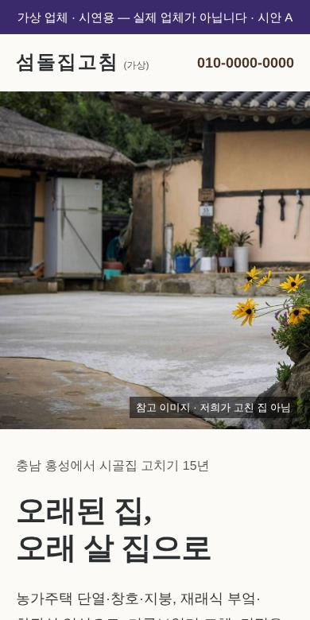
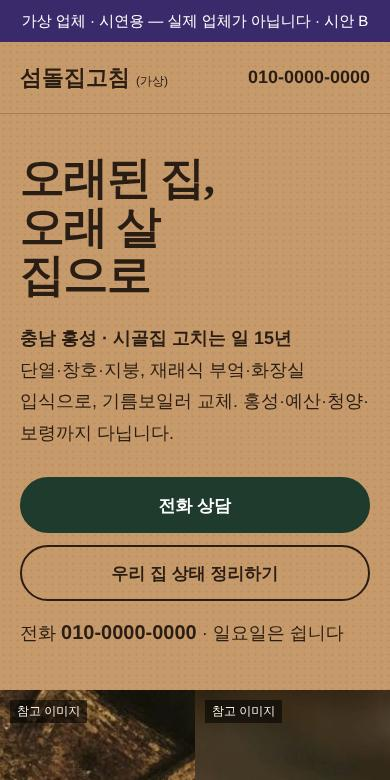

가상 업체 · 시연용 — 실제 업체가 아닙니다
섬돌집고침 첫 화면 시안 3가지
눌러서 휴대폰으로 보시고 하나를 골라 주세요. 고른 쪽으로 나머지 화면을 만듭니다.

A. 옛집 그대로
진짜 시골 옛집 사진이 화면을 채우고, 흰 회벽 바탕에 명조 제목. 조용하고 믿음직한 장인 느낌.

B. 흙벽과 공정
황토 흙벽색 바탕에 큰 글자, 바로 아래 진행 4단계를 사진 띠로. 일하는 사람이 보이는 작업장 느낌.
C. 누구 집인가요
첫 화면이 곧 질문. 부모님 댁·빈집·사는 집 중 누르면 그 경우의 안내가 바로 나옴. 자녀가 휴대폰으로 보기 쉬움.